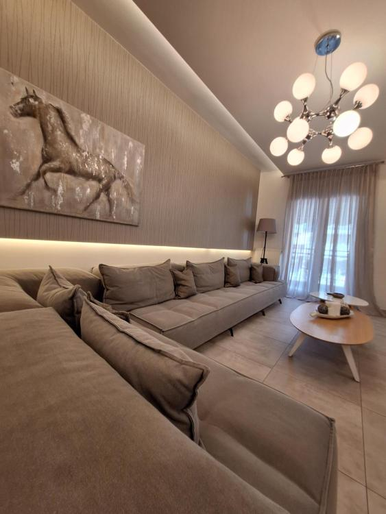
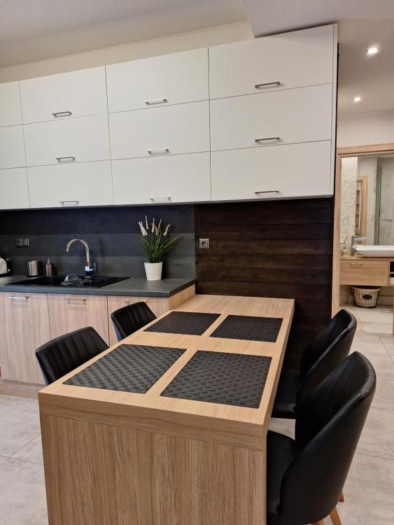

O smeštaju
do 6 osoba · 2 spavaće sobe · 2 kreveta · 1 kupatilo · 78 m²
Moderan, potpuno renoviran stan od 78 m² na bulevaru Vasilisis Olgas, nekoliko minuta od šetališta uz more, sa restoranima, pekarama i supermarketima svuda okolo.
Veliki dnevni boravak sa veoma velikom ugaonom garniturom, na kojoj se može i spavati, i televizorom. Otvorena, potpuno opremljena kuhinja sa trpezarijskim stolom, rernom, pločom, frižiderom, mikrotalasnom i mašinom za veš.
Dve spavaće sobe sa bračnim krevetima i klima-uređajem, kao i radni kutak sa stolom.
Moderno kupatilo sa staklenom tuš-kabinom, peškirima, bade-mantilima i kozmetikom.
Balkon sa tendom, stočićem i foteljama gleda na grad.
Sadržaji
- Balkon
- Wi-Fi
- Klima-uređaj
- Grejanje
- Televizor
- Potpuno opremljena kuhinja
- Rerna i mikrotalasna
- Mašina za veš
- Radni sto
- Posteljina
- Peškiri za kupanje i lice
- Bade-mantili
- Šampon i gel za tuširanje
- Lift
- Kućni ljubimci na zahtev
- Bebi krevetac besplatno
Lokacija
Vasilissis Olgas Ave 74, 546 43 Thessaloniki